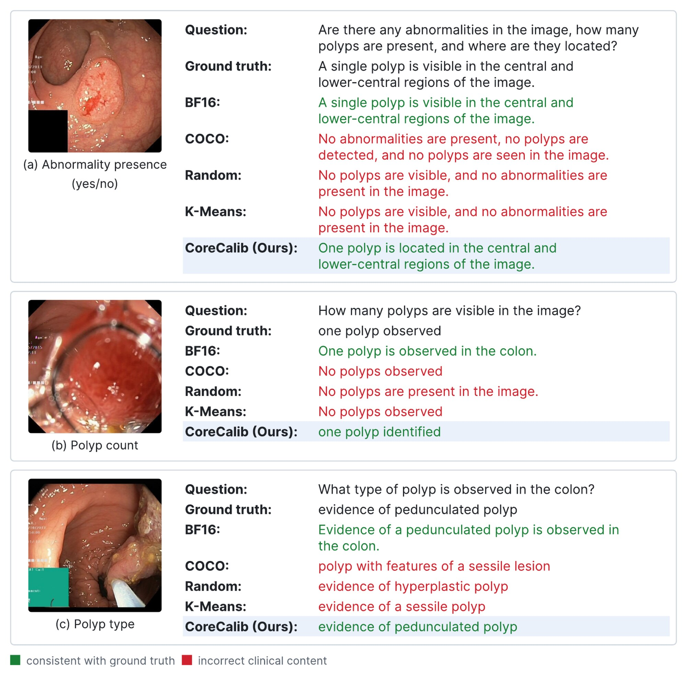

Medical vision-language models (VLMs) show promise for clinical image understanding, but their computational and memory requirements hinder deployment on resource-constrained clinical hardware. Post-training quantization (PTQ) offers a practical compression strategy without retraining, yet its effectiveness depends strongly on the calibration data.
We propose CoreCalib, a training-free and quantizer-agnostic framework for constructing compact calibration sets that preserve the target medical VQA distribution. CoreCalib stratifies data by clinical question class, identifies representative visual modes using frozen DINOv2 features with UMAP and HDBSCAN, and expands selected images into class-balanced question-answer pairs.
On Kvasir-VQA-x1, we evaluate CoreCalib with MASQuant, GPTQ, and QIG using a fixed 128-pair budget. CoreCalib achieves the best METEOR with all three quantizers and the best ROUGE-L with MASQuant and GPTQ. With W4A8 MASQuant, it improves METEOR from 0.5672 with COCO calibration to 0.6234, recovering approximately 41% of the degradation relative to BF16. These results support CoreCalib as a data-centric component for resource-efficient medical VLM deployment.
We quantized Qwen3.5-4B fine-tuned on Kvasir-VQA-x1 with three PTQ methods and evaluated on the full test split (15,955 samples). Every calibration strategy used exactly 128 samples: COCO (ShareGPT4V image-caption pairs, the common generic choice), Random (random images with the same QA expansion and balancing), and K-Means (per-class K-Means on the same DINOv2 features, nearest real image to each centroid). Within each quantizer, the best result is in bold and the second best is underlined.
| Quantizer | Calibration | BLEU ↑ | ROUGE-L ↑ | METEOR ↑ |
|---|---|---|---|---|
| Half precision (BF16) | 0.4964 | 0.7005 | 0.7040 | |
| MASQuant W4A8 |
COCO | 0.3313 | 0.5486 | 0.5672 |
| Random | 0.3827 | 0.5991 | 0.6170 | |
| K-Means | 0.3954 | 0.6063 | 0.6170 | |
| CoreCalib (Ours) | 0.3943 | 0.6103 | 0.6234 | |
| GPTQ W4A16 |
COCO | 0.4172 | 0.6373 | 0.6545 |
| Random | 0.4438 | 0.6586 | 0.6625 | |
| K-Means | 0.4380 | 0.6554 | 0.6642 | |
| CoreCalib (Ours) | 0.4473 | 0.6608 | 0.6649 | |
| QIG W4A8 |
COCO | 0.3099 | 0.5310 | 0.5513 |
| Random | 0.3041 | 0.5321 | 0.5565 | |
| K-Means | 0.3048 | 0.5235 | 0.5494 | |
| CoreCalib (Ours) | 0.3054 | 0.5313 | 0.5581 | |
Generic COCO calibration caused the largest degradation, and every in-domain strategy recovered a substantial part of it, most notably with MASQuant, where CoreCalib improved METEOR by 0.0562 over COCO. CoreCalib achieved the best METEOR with every quantizer and the best ROUGE-L with MASQuant and GPTQ. GPTQ and QIG were less sensitive to the calibration data, which is consistent with how each quantizer uses its calibration inputs: MASQuant and QIG estimate activation statistics, smoothing factors or token-level sensitivities from them, while GPTQ mainly estimates reconstruction statistics.
Test examples with MASQuant (W4A8) under different calibration sets. Green answers are consistent with the ground truth; red answers contradict it. With COCO, Random or K-Means calibration, the quantized model denies a visible polyp, miscounts it, or calls a pedunculated polyp sessile or hyperplastic. With CoreCalib, it keeps the finding, the count and the lesion type, matching the half-precision model.

These examples illustrate clinically meaningful errors after compression; they are not a clinical validation.
@inproceedings{dam2026corecalib,
author = {Dam, Tien-Dat and Huynh, Huu-Thuan and Tran, Minh-Triet and Le, Trung-Nghia},
title = {Density-Aware Calibration for Resource-Efficient Medical Vision-Language Models},
booktitle = {International Symposium on Information and Communication Technology (SOICT)},
year = {2026},
}